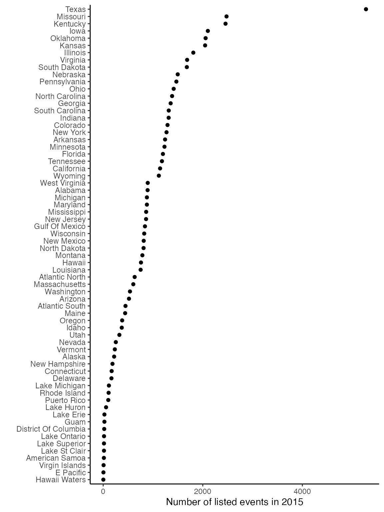
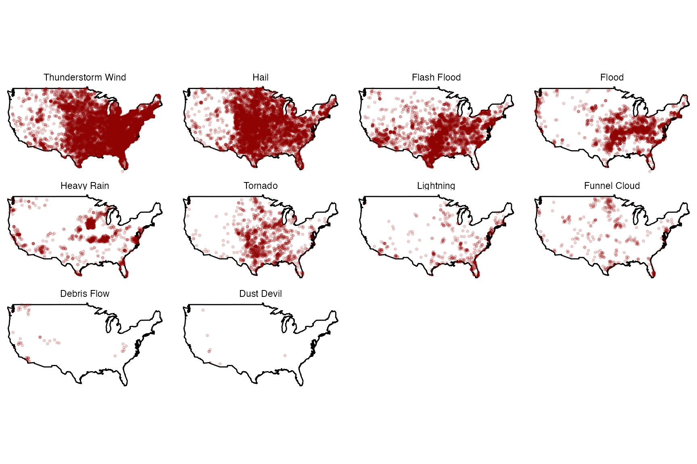

Details
Brooke Anderson, Ziyu Chen, and Jordan Robinson
Source:vignettes/a03_details.Rmd
a03_details.RmdThis vignette provides more details on how the
noaastormevents package interacts with the online NOAA
Storm Events database to pull storm event listings based on user
queries.
Structure of NOAA Storm Events data
The NOAA Storm Events data is available online at https://www.ncdc.noaa.gov/stormevents/. That website includes documentation on the data, as well as a page that allows bulk data download of yearly csv files either through ftp or http (https://www.ncdc.noaa.gov/stormevents/ftp.jsp). Data is available from January 1950 and tends to be updated to within a few months of present.
Data is stored in bulk by year in compressed comma-separated files
(.csv.gz files). Each year has three compressed files
available:
-
StormEvents_detailsfile -
StormEvents_fatalitiesfile -
StormEvents_loationsfile
File names for each file include both the year of the data (e.g.,
“1950”) and the date the file was last modified (e.g., “20170120”).
Files are given regular names other than these two specifications. This
regular naming scheme allows us to use regular expressions in code
within the noaastormevents package on all listed file names
to identify the exact name of a file for a specific year, as explained
in the next section.
The size of all three file types has increased with time (see figure below; note that the y-axis is log 10). The largest file for any given year is the “Details” file. Most file sizes increased substantially in 1996 (dotted vertical line), when the database dramatically expanded the types of events it included. Before 1996, the database covered tornadoes and, for some years, a few other types of events. From 1996, the database expanded to include events like floods, tropical storms, snow storms, etc. While “Locations” files exist in the database for early years, they contain no information until 1996. See the documentation at the NOAA Storm Events database website for more information on the coverage of the database at different times across its history.
Downloading NOAA Storm Events data for a year
The database data is stored in files separated by year, so the file
for an entire year is identified and downloaded when a user asks for
event listings from any time or any type of event that year. For
example, if a user wants to list flood events from the week of Hurricane
Floyd in 1999, functions in the noaastormevents package
would first identify and download the full “Details” data file for 1999
and then filter down to flood events starting in the correct week.
To identify the online file path for a specific year, the
find_file_name function in the noaastormevents
package uses the htmltab function (from the package of the
same name) to create a dataframe listing all files available for
download from the NOAA Storm Events database. The function then uses
regular expressions to identify the file name in that listing for the
requested year. For example, the name of the file with “Details”
information for 1999 can be determined with:
find_file_name(year = "1999", file_type = "detail")## [1] "StormEvents_details-ftp_v1.0_d1999_c20220425.csv.gz"Here is the full definition of the find_file_name
function:
find_file_name## function (year = NULL, file_type = "details")
## {
## url <- paste0("https://www1.ncdc.noaa.gov/pub/data/swdi/",
## "stormevents/csvfiles/")
## page <- readLines(curl::curl(url))
## all_file_names <- XML::getHTMLLinks(page)
## file_year <- paste0("_d", year, "_")
## file_name <- grep(file_type, grep(file_year, all_file_names,
## value = TRUE), value = TRUE)
## if (length(file_name) == 0) {
## stop("No file found for that year and / or file type.")
## }
## return(file_name)
## }
## <bytecode: 0x7fb8a2e30c28>
## <environment: namespace:noaastormevents>Typically, this function will only be used internally rather than called directly by a user.
Once the file name has been determined, a function in the package then downloads that file to the user’s computer. For some years, files are very large, so this download can take a little while. To avoid downloading data from the same year more than once within an R session, the downloading function stores the downloaded data for that year in a temporary environment in the R user’s session. In later requests for the same year, the function will first check for data from this year in the temporary environment and only download the data from the online database if it is not already available on the user’s computer.
This environment is created to be temporary, which means that it is deleted at the end of the current R session. While some packages that access online databases cache any downloaded data in a way that persists between R sessions, we chose not to do that and instead only cache within an R session, but delete all data at the close of the R session. This is because some of the Storm Event files are very large, and most users will likely only want to keep a small subset of the data for a given year (e.g., only flood events during the week of Hurricane Floyd). It would be wasteful of memory to cache all the 1999 data indefinitely on the user’s computer in this case; instead, the user should use our package to create the desired subset of the data and then explicitly store that subset locally to use in future analysis.
The function for downloading the file for a year is called
download_storm_data. Here is it’s full definition:
noaastormevents:::download_storm_data## function (year, file_type = "details")
## {
## file_name <- find_file_name(year = year, file_type = file_type)
## path_name <- paste0("https://www1.ncdc.noaa.gov/pub/data/swdi/stormevents/",
## "csvfiles/", file_name)
## if (!exists("noaastormevents_package_env")) {
## temp <- tempfile()
## utils::download.file(path_name, temp)
## noaastormevents_package_env <<- new.env()
## noaastormevents_package_env$lst <- list()
## noaastormevents_package_env$lst[[as.character(year)]] <- suppressWarnings(utils::read.csv(gzfile(temp),
## as.is = TRUE))
## unlink(temp)
## }
## else if (is.null(noaastormevents_package_env$lst[[as.character(year)]])) {
## temp <- tempfile()
## utils::download.file(path_name, temp)
## noaastormevents_package_env$lst[[as.character(year)]] <- suppressWarnings(utils::read.csv(gzfile(temp),
## as.is = TRUE))
## unlink(temp)
## }
## return(NULL)
## }
## <bytecode: 0x7fb8a122c998>
## <environment: namespace:noaastormevents>Finally, the noaastormevents package allows a user to
query storm events either by a date range or by a named historical
tropical storm, rather than a year. The create_storm_data
function inputs either a date range or a storm name, as well as the
requested file type, and downloads data for the appropriate year or
years. If the user requests a date range, the function will download
yearly data files for all years included in that range. If the user
requests a tropical storm, the function will pull the data for that
particular year. Here is the full definition of
create_storm_data:
create_storm_data## function (date_range = NULL, storm = NULL, file_type = "details")
## {
## if (!is.null(date_range)) {
## date_range_years <- lubridate::year(date_range)
## requested_years <- seq(from = date_range_years[1], to = date_range_years[2])
## lapply(requested_years, download_storm_data)
## for (i in 1:length(requested_years)) {
## requested_year <- as.character(requested_years[i])
## if (i == 1) {
## storm_data <- noaastormevents_package_env$lst[[requested_year]]
## }
## else {
## storm_data <- rbind(storm_data, noaastormevents_package_env$lst[[requested_year]])
## }
## }
## }
## else if (!is.null(storm)) {
## storm_year <- stringr::str_extract(storm, "\\-[0-9].+") %>%
## stringr::str_remove("\\-")
## download_storm_data(year = storm_year, file_type = file_type)
## storm_data <- noaastormevents_package_env$lst[[as.character(storm_year)]]
## }
## else {
## stop("You must specify either `date_range` or `storm`.")
## }
## storm_data <- tibble::as_tibble(storm_data)
## return(storm_data)
## }
## <bytecode: 0x7fb8a297e730>
## <environment: namespace:noaastormevents>As a note, many of the functions in the noaastormevents
package that allow linking events with tropical storms rely on
historical data for the storms, including storm tracks, estimated
distances to eastern U.S. counties, and dates when the storm was closest
to each county. The package pulls this historical data from the
hurricaneexposuredata package, through the interfacing
package hurricaneexposure. The hurricane data goes from
1988 to (currently) 2015 and includes all Atlantic basin tropical storms
that came within 250 km of at least one U.S. county. The following
storms are included in that package and so available to be used for
functions in noaastormevents:
| Year | Storms |
|---|---|
| 1988 | Alberto, Beryl, Chris, Florence, Gilbert, Keith, AL13, AL14, AL17 |
| 1989 | Allison, Chantal, Hugo, Jerry |
| 1990 | AL01, Bertha, Marco |
| 1991 | Ana, Bob, Fabian, AL12 |
| 1992 | AL02, Andrew, Danielle, Earl |
| 1993 | AL01, Arlene, Emily |
| 1994 | Alberto, AL02, Beryl, Gordon |
| 1995 | Allison, Dean, Erin, Gabrielle, Jerry, Opal |
| 1996 | Arthur, Bertha, Edouard, Fran, Josephine |
| 1997 | AL01, Ana, Danny |
| 1998 | Bonnie, Charley, Earl, Frances, Georges, Hermine, Mitch |
| 1999 | Bret, Dennis, AL07, Floyd, Harvey, Irene |
| 2000 | AL04, Beryl, AL09, Gordon, Helene, Leslie |
| 2001 | Allison, Barry, Gabrielle, Karen, Michelle |
| 2002 | Arthur, Bertha, Cristobal, Edouard, Fay, Gustav, Hanna, Isidore, Kyle, Lili |
| 2003 | Bill, Claudette, AL07, Erika, Grace, Henri, Isabel |
| 2004 | Alex, Bonnie, Charley, Frances, Gaston, Hermine, Ivan, Jeanne, Matthew |
| 2005 | Arlene, Cindy, Dennis, Emily, Katrina, Ophelia, Rita, Tammy, Twenty-Two, Wilma |
| 2006 | Alberto, Beryl, Chris, Ernesto |
| 2007 | Andrea, Barry, Erin, Gabrielle, Humberto, Ten, Noel |
| 2008 | Cristobal, Dolly, Edouard, Fay, Gustav, Hanna, Ike, Kyle, Paloma |
| 2009 | One, Claudette, Ida |
| 2010 | Alex, Two, Bonnie, Five, Earl, Hermine, Nicole, Paula |
| 2011 | Bret, Don, Emily, Irene, Lee |
| 2012 | Alberto, Beryl, Debby, Isaac, Sandy |
| 2013 | Andrea, Dorian, Karen |
| 2014 | Arthur |
| 2015 | Ana, Bill, Claudette |
| 2016 | Bonnie, Colin, Eight, Hermine, Julia, Matthew |
| 2017 | Cindy, Emily, Harvey, Irma, Jose, Nate, Philippe |
| 2018 | Alberto, Chris, Florence, Gordon, Michael |
| 2019 | Barry, Three, Dorian, Fernand, Imelda, Melissa, Nestor, Olga |
| 2020 | Arthur, Bertha, Cristobal, Fay, Hanna, Isaias, Kyle, Laura, Marco, Omar, Sally, Beta, Delta, Zeta, Eta |
| 2021 | Bill, Claudette, Danny, Elsa, Fred, Henri, Ida, Mindy, Nicholas, Odette, Wanda |
Structure of “Details” data files
While the noaastormevent package focuses on higher-level
functions, which result in a simplified and cleaned version of this
storm events data, a user can use the create_storm_data
function to pull the full dataset for a year into R and work with the
raw, uncleaned version. For example, here is a call that pulls the raw
data for 2015 into an R object called events_2015.
events_2015 <- create_storm_data(date_range = c("2015-01-01", "2015-12-31"))
slice(events_2015, 1:3)## # A tibble: 3 × 51
## BEGIN_YEARMONTH BEGIN_DAY BEGIN_TIME END_YEARMONTH END_DAY END_TIME EPISODE_ID
## <int> <int> <int> <int> <int> <int> <int>
## 1 201501 27 1200 201501 28 400 92561
## 2 201501 24 700 201501 24 2100 92625
## 3 201501 27 600 201501 27 1200 92561
## # ℹ 44 more variables: EVENT_ID <int>, STATE <chr>, STATE_FIPS <int>,
## # YEAR <int>, MONTH_NAME <chr>, EVENT_TYPE <chr>, CZ_TYPE <chr>,
## # CZ_FIPS <int>, CZ_NAME <chr>, WFO <chr>, BEGIN_DATE_TIME <chr>,
## # CZ_TIMEZONE <chr>, END_DATE_TIME <chr>, INJURIES_DIRECT <int>,
## # INJURIES_INDIRECT <int>, DEATHS_DIRECT <int>, DEATHS_INDIRECT <int>,
## # DAMAGE_PROPERTY <chr>, DAMAGE_CROPS <chr>, SOURCE <chr>, MAGNITUDE <dbl>,
## # MAGNITUDE_TYPE <chr>, FLOOD_CAUSE <chr>, CATEGORY <int>, …This raw data has 51 columns. This includes:
- the date and time of the beginning and end of the event
(
BEGIN_YEARMONTH,BEGIN_DAY,BEGIN_TIME,BEGIN_DATE_TIME,END_YEARMONTH,END_DAY,END_TIME,END_DATE_TIME) - unique IDs for the event and the episode, which can be used to link
listings for events and episodes across the three types of files
(“details”, “locations”, and “fatalities”) (
EPISODE_ID,EVENT_ID). Note that there are more unique event IDs (57,779 for the 2015 events data) than unique episode IDs (9,511 for the 2015 events data) - the type of event (
EVENT_TYPE) - the location of the event (
CZ_TYPE,CZ_FIPS,CZ_NAME,BEGIN_AZIMUTH,BEGIN_LOCATION,END_LOCATION,END_AZIMUTH,BEGIN_LAT,BEGIN_LON,END_LAT,END_LON) - description and impacts of the event
(
EPISODE_NARRATIVE,EVENT_NARRATIVE,INJURIES_DIRECT,INJURIES_INDIRECT,DEATHS_DIRECT,DEATHS_INDIRECT,DAMAGE_PROPERTY,DAMAGE_CROPS) - information on how the event was reported (
SOURCE) - some metrics that are specific to event types (e.g.,
FLOOD_CAUSE,CATEGORY,TOR_F_SCALE,TOR_LENGTH,TOR_WIDTH)
Event types
The following sections provide some summary statistics for data from this database for a single year (2015), to help users better understand the available data. Users may want to conduct similar data analysis themselves with the set of data they pull from the NOAA Storm Events database relevant to a particular research project. The code from this vignette (available at the package’s GitHub repository) can serve as a starting point for that.
In the 2015 event listings, here are the types of events and the number of reported events for each:
| Event type | Number of events in 2015 |
|---|---|
| Thunderstorm Wind | 14,400 |
| Hail | 9,398 |
| Flash Flood | 5,063 |
| Winter Weather | 4,242 |
| Winter Storm | 3,605 |
| Flood | 2,587 |
| Heavy Snow | 2,557 |
| High Wind | 2,192 |
| Marine Thunderstorm Wind | 1,880 |
| Heavy Rain | 1,518 |
| Drought | 1,397 |
| Tornado | 1,320 |
| Cold/Wind Chill | 925 |
| Extreme Cold/Wind Chill | 853 |
| Dense Fog | 819 |
| Strong Wind | 711 |
| High Surf | 561 |
| Lightning | 403 |
| Heat | 397 |
| Funnel Cloud | 362 |
| Blizzard | 349 |
| Frost/Freeze | 345 |
| Ice Storm | 327 |
| Excessive Heat | 325 |
| Wildfire | 284 |
| Coastal Flood | 270 |
| Waterspout | 240 |
| Sleet | 95 |
| Astronomical Low Tide | 80 |
| Rip Current | 68 |
| Lake-Effect Snow | 63 |
| Debris Flow | 54 |
| Tropical Storm | 49 |
| Dust Storm | 41 |
| Avalanche | 27 |
| Marine High Wind | 24 |
| Marine Hail | 19 |
| Dust Devil | 10 |
| Freezing Fog | 10 |
| Marine Strong Wind | 9 |
| Hurricane (Typhoon) | 7 |
| Seiche | 6 |
| Storm Surge/Tide | 4 |
| Tropical Depression | 4 |
| Dense Smoke | 2 |
| Marine Dense Fog | 2 |
| Sneakerwave | 1 |
| Tsunami | 1 |
Here are how the start dates for listings for each event type are distributed over the year (event types are ordered by decreasing total count during the year; note that the y-axes vary depending on the range of events by date for each event type):
## `summarise()` has grouped output by 'date'. You can override using the
## `.groups` argument.Many event types are clearly seasonal (e.g., winter weather, winter storms, heavy snow, cold, extreme cold, blizzards, ice storms, lake-effect snow, and avalanches are all much more common during winter months, while tropical depressions and tropical storms are all limited to the hurricane season). However, for some events, reporting seasonal patterns might be based not just on the true pattern of events but also on the timing of important exposures and impacts of the events. For example, rip currents have many more listings during the spring and summer, which may be related to events being more likely to be listed when more people are swimming. Frost event listings are particularly high at the start and end of the frost season, rather than in the middle of winter, which may be related to the impacts of frost on crops being higher in spring and fall than during the winter. If working with this data, it important to keep in mind that the data are based on reporting, and there may be related influences on the probability of an event being reported and included in the data that differ from using data from something like a weather station.
Episodes versus events
“Episodes” seem to collect related “events”, where events can vary in the type or location of the event, while an “episode” collects events that belong to the same large system. The following graph shows, for each episode listed in 2015, the number of events listed for the episode (x-axis) and the size (in days) of the range of begin dates across events in the episode.
An episode will never include events in more than one state, so a large weather system could potentially be described by multiple episodes in different states:
events_2015 %>%
select(EPISODE_ID, STATE) %>%
group_by(EPISODE_ID) %>%
summarize(n_states = length(unique(STATE))) %>%
ungroup() %>%
summarize(max_n_states = max(n_states))## # A tibble: 1 × 1
## max_n_states
## <int>
## 1 1Here are maps with the beginning locations of events in the episodes with the most events in 2015. Note that the beginning latitude and longitude are not listed for every event, resulting in one of the episodes not having any points on the map. From the other maps, it is clear that events within the episode were fairly close together.
For these episodes with the most events in 2015, the following graph shows the number of events reported for the episode. One of the episodes was a winter storm, another was heavy rains and floods, while the rest of the episodes included high winds, hail, tornadoes, rain, and / or flooding.
Once we removed event types with less that 50 listings in 2015, we did a cluster analysis of event types, to group events that are more likely to occur together within an episode. The following plot shows the resulting cluster structure of these event types.
The next graph shows the number of events of each event type (excluding event types with less than 50 total listings in 2015). Each row represents an episode.
How events are reported
The SOURCE column of the raw data gives information on
how each event was reported.
| Source of event report | Number of events reported in 2015 |
|---|---|
| Trained Spotter | 9,904 |
| Public | 6,967 |
| Law Enforcement | 5,318 |
| Emergency Manager | 5,236 |
| Mesonet | 3,386 |
| COOP Observer | 2,952 |
| 911 Call Center | 2,439 |
| Broadcast Media | 2,132 |
| ASOS | 1,918 |
| Department of Highways | 1,894 |
| Amateur Radio | 1,422 |
| Social Media | 1,356 |
| AWOS | 1,312 |
| Official NWS Observations | 1,102 |
| State Official | 1,065 |
| NWS Storm Survey | 1,058 |
| Drought Monitor | 1,034 |
| CoCoRaHS | 987 |
| NWS Employee | 840 |
| Newspaper | 715 |
| Fire Department/Rescue | 682 |
| River/Stream Gage | 643 |
| Storm Chaser | 528 |
| Other Federal Agency | 494 |
| C-MAN Station | 360 |
| County Official | 295 |
| RAWS | 282 |
| SNOTEL | 266 |
| SHAVE Project | 241 |
| Park/Forest Service | 229 |
| Utility Company | 171 |
| Buoy | 149 |
| WLON | 134 |
| Unknown | 93 |
| AWSS | 72 |
| Local Official | 58 |
| Post Office | 48 |
| Lifeguard | 38 |
| Coast Guard | 28 |
| Airplane Pilot | 24 |
| Mariner | 23 |
| Insurance Company | 7 |
| Tribal Official | 4 |
The majority of events in this database, at least for 2015, were reported by either a trained spotter or the public.
The following graph shows, for each type of event in 2015, the percent reported by each source. For some types of events, reporting is dominated by a specific source. For example, most high surf reports come from trained spotters, while most drought reports come from drought monitors and most tornado reports come from the NWS Storm Survey. For other types of events, reporting sources are more diversified. Both axes of the plot are ordered by overall frequency (i.e., overall number of each type of event and overall number of reports from each source).
Event locations
Each event has a state listed for the event (STATE). The
following graph gives the number of reported events in each state for
2015:

Note that “states” include bodies of water (e.g., specific Great Lakes, the Hawaii waters, the Gulf of Mexico) and territories (American Samoa, Guam, Puerto Rico, Virgin Islands).
For some event types, the latitude and longitude of the beginning of the event is included with the event listing.
| With latitude / longitude |
| Without latitude / longitude |
| Event types |
|---|
| Debris Flow, Dust Devil, Flash Flood, Flood, Funnel Cloud, Hail, Heavy Rain, Lightning, Marine Hail, Marine High Wind, Marine Strong Wind, Marine Thunderstorm Wind, Thunderstorm Wind, Tornado, Waterspout |
| Astronomical Low Tide, Avalanche, Blizzard, Coastal Flood, Cold/Wind Chill, Dense Fog, Dense Smoke, Drought, Dust Storm, Excessive Heat, Extreme Cold/Wind Chill, Freezing Fog, Frost/Freeze, Heat, Heavy Snow, High Surf, High Wind, Hurricane (Typhoon), Ice Storm, Lake-Effect Snow, Marine Dense Fog, Rip Current, Seiche, Sleet, Sneakerwave, Storm Surge/Tide, Strong Wind, Tropical Depression, Tropical Storm, Tsunami, Wildfire, Winter Storm, Winter Weather |
Of the 2015 events with a latitude and longitude listed for the beginning of the event and that are in the continental U.S., here are those locations by month:
Here are those locations by event type:

Some events have different latitudes and longitudes for the beginning and ending locations. For example, here are maps for one state (Arkansas) of events with different starting and ending locations:
Some events are reported by forecast zone (CZTYPE of
“Z”) rather than county (CZTYPE of “C”). Specific types of
events are typically either always reported for a county or always
reported for a forecast zone (see table below). Events typically
reported by county include floods (“Flash Flood”, “Flood”, “Debris
Flow”), tornado-like events (“Tornado”, “Funnel Cloud”, “Dust Devil”),
and a few other events often related to thunderstorms (“Thunderstorm
Wind”, “Hail”, “Heavy Rain”, “Lightning”). Events typically reported by
forecast zone include severe winter weather (“Winter Weather”, “Winter
Storm”, “Heavy Snow”, “Cold/Wind Chill”, “Extreme Cold/Wind Chill”,
“Blizzard”, “Frost/Freeze”, “Ice Storm”, “Sleet”, “Lake-Effect Snow”,
“Avalanche”, “Freezing Fog”), extreme heat (“Heat”, “Excessive Heat”,
“Drought”), events related to the water or coast (“Marine Thunderstorm
Wind”, “High Surf”, “Coastal Flood”, “Waterspout”, “Astronomical Low
Tide”, “Rip Current”, “Tropical Storm”, “Marine High Wind”, “Marine
Hail”, “Marine Strong Wind”, “Hurricane”, “Seiche”, “Storm Surge/Tide”,
“Tropical Depression”, “Marine Dense Fog”, “Sneakerwave”, “Tsunami”),
and a few others (“High Wind”, “Dense Fog”, “Strong Wind”, “Wildfire”,
“Dust Storm”, “Dense Smoke”).
| Event type | County | Forecast Zone | Total | % county |
|---|---|---|---|---|
| Thunderstorm Wind | 14,400 | 0 | 14,400 | 100% |
| Hail | 9,398 | 0 | 9,398 | 100% |
| Flash Flood | 5,063 | 0 | 5,063 | 100% |
| Flood | 2,587 | 0 | 2,587 | 100% |
| Heavy Rain | 1,518 | 0 | 1,518 | 100% |
| Tornado | 1,320 | 0 | 1,320 | 100% |
| Lightning | 403 | 0 | 403 | 100% |
| Funnel Cloud | 362 | 0 | 362 | 100% |
| Debris Flow | 54 | 0 | 54 | 100% |
| Dust Devil | 10 | 0 | 10 | 100% |
| Heat | 1 | 396 | 397 | 0% |
| Winter Weather | 0 | 4,242 | 4,242 | 0% |
| Winter Storm | 0 | 3,605 | 3,605 | 0% |
| Heavy Snow | 0 | 2,557 | 2,557 | 0% |
| High Wind | 0 | 2,192 | 2,192 | 0% |
| Marine Thunderstorm Wind | 0 | 1,880 | 1,880 | 0% |
| Drought | 0 | 1,397 | 1,397 | 0% |
| Cold/Wind Chill | 0 | 925 | 925 | 0% |
| Extreme Cold/Wind Chill | 0 | 853 | 853 | 0% |
| Dense Fog | 0 | 819 | 819 | 0% |
| Strong Wind | 0 | 711 | 711 | 0% |
| High Surf | 0 | 561 | 561 | 0% |
| Blizzard | 0 | 349 | 349 | 0% |
| Frost/Freeze | 0 | 345 | 345 | 0% |
| Ice Storm | 0 | 327 | 327 | 0% |
| Excessive Heat | 0 | 325 | 325 | 0% |
| Wildfire | 0 | 284 | 284 | 0% |
| Coastal Flood | 0 | 270 | 270 | 0% |
| Waterspout | 0 | 240 | 240 | 0% |
| Sleet | 0 | 95 | 95 | 0% |
| Astronomical Low Tide | 0 | 80 | 80 | 0% |
| Rip Current | 0 | 68 | 68 | 0% |
| Lake-Effect Snow | 0 | 63 | 63 | 0% |
| Tropical Storm | 0 | 49 | 49 | 0% |
| Dust Storm | 0 | 41 | 41 | 0% |
| Avalanche | 0 | 27 | 27 | 0% |
| Marine High Wind | 0 | 24 | 24 | 0% |
| Marine Hail | 0 | 19 | 19 | 0% |
| Freezing Fog | 0 | 10 | 10 | 0% |
| Marine Strong Wind | 0 | 9 | 9 | 0% |
| Hurricane (Typhoon) | 0 | 7 | 7 | 0% |
| Seiche | 0 | 6 | 6 | 0% |
| Storm Surge/Tide | 0 | 4 | 4 | 0% |
| Tropical Depression | 0 | 4 | 4 | 0% |
| Dense Smoke | 0 | 2 | 2 | 0% |
| Marine Dense Fog | 0 | 2 | 2 | 0% |
| Sneakerwave | 0 | 1 | 1 | 0% |
| Tsunami | 0 | 1 | 1 | 0% |
For events reported by county, here are maps showing distributions in the number of events reported in 2015:
Here is a sample of events that are instead reported by forecast
zone, with the state, CZ_NAME, and event narrative
included. Note that the county name is often provided by the
CZ_NAME column, although the CZ_FIPS value is
the forecast zone for any event listed by forecast zone. We use code to
try to match STATE and CZ_NAME listings to a
table of U.S. county names and associated county FIPS for each event
listed by forecast zone, to allow these events to be included in event
listings and maps created by functions in
noaastormevents.
| STATE | CZ_NAME |
|---|---|
| Virginia | Carroll |
| Minnesota | Lincoln |
| Wyoming | Natrona County Lower Elevations |
| Wyoming | South Laramie Range Foothills |
| Alabama | Colbert |
| Tennessee | Shelby |
| Missouri | Caldwell |
| Michigan | Ontonagon |
| EVENT_NARRATIVE |
|---|
| Ice accretion ranged from one to two tenths of an inch along and near the crest of the Blue Ridge and long the Interstate 77 corridor. The remainder of the county generally received less than one-tenth inch ice accretion. |
| Freezing drizzle was quickly followed by snow. The snow accumulated 5 to 9 inches over a 24 to 30 hour period that began on November 30th, including 9.0 inches at Lake Benton. The storm resulted in cancellations or cutbacks of school classes. |
| There were numerous wind gusts past 60 mph along Outer Drive in Casper including a maximum of 71 mph shortly after 0500MST. |
| The UPR sensor at Emkay measured wind gusts of 58 mph or higher, with a peak gust of 79 mph at 01/0451 MST. |
| A combination of light snow and sleet resulted in a dusting to a half of an inch of snow across the county. The wintry precipitation became freezing rain as low level temperatures warmed, with a quarter of an inch of freezing rain reported. |
| The Memphis ASOS reported heat index values above 105 during the afternoon hours on July 28th while values were greater than 110 during the afternoon on July 29th. Two deaths occurred as a result. |
| Several areas across northeast Kansas and northwest Missouri saw ice accumulations approaching a quarter inch as well as sleet ranging from a quarter to a half inch in most locations, with some locations reporting over an inch of sleet. Once the sleet ended another 3 to 4 inches of snow fell before the system moved out. |
| There was a public report of an estimated six inches of snow at White Pine for the |22-hour period ending early evening on the 4th. Northwest winds gusting over 25 mph also caused some blowing of snow reducing visibility to one half mile or less at times. Wind chills by early morning on the 5th fell as low as 35 below zero closing schools throughout the county. |
Within the code in noaastormevents, the
match_forecast_county is used to try to match a county FIPS
to each of the events listed by forecast zone. To get the full code for
that function, you can run match_forecast_county (i.e., the
function name, without parentheses after). To match an events listed by
forecast zone to a county, this function tries the following to try to
match all or part of the state_name and
cz_name columns in the storm events data to the state and
county names in the county.fips dataframe that comes with
the maps package:
- Tries to match
cz_nameto the county name incounty.fipsafter removing any periods or apostrophes incz_name. - Next, for county names with ‘county’ in them, try to match the word
before ‘county’ to county name in
county.fips. Then check the two words before ‘county’, then the one and two words before ‘counties’. - Next, pull out the last word in
cz_nameand try to match it to the county name incounty.fips. Then check the last two words incz_name, then check the last three words incz_name. - Next, pull any words right before a slash and check that against the county name.
- Finally, try removing anything in parentheses in
cz_namebefore matching.
In addition, there are a few final steps in cleaning the data. First,
all listings with “Utah” in the cz_name are set to missing–
while there is a Utah County, Utah, from inspection of event listings in
2015, events in Utah with “Utah” in cz_name often referred
to parts of the state, rather than to the county. Further, any event
with “National Park” listed in cz_name is set to not match
with a county FIPS. In Wyoming, Park County was being matched to a
cz_name for Yellowstone National Park, and this could be a
problem in other states, so this extra check was included.
## Warning: `filter_()` was deprecated in dplyr 0.7.0.
## ℹ Please use `filter()` instead.
## ℹ See vignette('programming') for more help
## Call `lifecycle::last_lifecycle_warnings()` to see where this warning was
## generated.## Warning: `select_()` was deprecated in dplyr 0.7.0.
## ℹ Please use `select()` instead.
## Call `lifecycle::last_lifecycle_warnings()` to see where this warning was
## generated.In the 2015 events data, there are 22,664 events listed by forecast
zone rather than county. Once the match_forecast_county
function is applied to these events, 16,405 events were linked to a
county (72%) while 6,259 events (28%) could not be matched to a
county.
Of the events not matched to a county, 2,997 events were outside the continental U.S. (i.e., in Hawaii, Alaska, U.S. territories, or waters):
| State | Number of events listed by forecast zone |
|---|---|
| Gulf Of Mexico | 839 |
| Atlantic North | 632 |
| Hawaii | 567 |
| Atlantic South | 448 |
| Alaska | 204 |
| Lake Michigan | 115 |
| Lake Huron | 58 |
| Guam | 25 |
| Lake Erie | 25 |
| Lake Ontario | 17 |
| Lake St Clair | 16 |
| Lake Superior | 16 |
| Puerto Rico | 16 |
| American Samoa | 11 |
| E Pacific | 5 |
| Hawaii Waters | 3 |
This left 3,262 events in the continental U.S. that were listed by
forecast zone but could not be linked to a county by the
match_forecast_county function. Most of these events had a
value for cz_name with words related to mountains, water,
adjacency (e.g., “area of”, “vicinity of”), or a few other word types
(e.g., “desert”, “hwy”). The following table gives the number of these
remaining unmatched events with words from each of these categories
(note: the cz_name for an event may have words from more
than one of these categories, in which case it would be counted in this
table under both categories).
| Word type | Words | # events |
|---|---|---|
| Mountain | mountains, mountain, valley, valleys, divide, range, ridge, ridges, gap, front, cascades, foothills, plateau, highlands, mtns, hills, mesa, mesas, vly, peak, gorge, rim, arches, hole, canyon | 2,392 |
| Water | beaches, beach, river, basin, coast, delta, lake, shoreline, bay | 637 |
| Adjacent | area, region, vicinity, country | 282 |
| Other | desert, hwy, panhandle, corridor, nation, plains, lowlands, prarie | 223 |
The following table summarizes the number of events that could not be linked to a county that contained at least one of each of these types of words:
| Event type | Mountain words | Water words | Adjacent words | Other words |
|---|---|---|---|---|
| High Wind | 646 | 166 | 75 | 47 |
| Winter Storm | 416 | 46 | 29 | 10 |
| Heavy Snow | 401 | 94 | 75 | 66 |
| Drought | 266 | 52 | 0 | 14 |
| Winter Weather | 240 | 70 | 27 | 35 |
| Dense Fog | 117 | 47 | 2 | 7 |
| Wildfire | 104 | 15 | 14 | 15 |
| Frost/Freeze | 67 | 35 | 4 | 4 |
| Strong Wind | 41 | 44 | 22 | 4 |
| Blizzard | 16 | 0 | 1 | 3 |
| Heat | 16 | 3 | 7 | 3 |
| Ice Storm | 13 | 5 | 7 | 0 |
| Avalanche | 12 | 3 | 3 | 0 |
| Cold/Wind Chill | 12 | 5 | 0 | 0 |
| Extreme Cold/Wind Chill | 10 | 2 | 0 | 0 |
| Dust Storm | 6 | 12 | 10 | 13 |
| Excessive Heat | 5 | 0 | 4 | 1 |
| Astronomical Low Tide | 3 | 1 | 2 | 0 |
| Freezing Fog | 1 | 1 | 0 | 0 |
| Coastal Flood | 0 | 17 | 0 | 0 |
| Dense Smoke | 0 | 1 | 0 | 0 |
| High Surf | 0 | 7 | 0 | 1 |
| Rip Current | 0 | 10 | 0 | 0 |
| Sneakerwave | 0 | 1 | 0 | 0 |
For 2015, here are the cz_name values for the events
that could not be matched to a county and did not include the words
listed above:
| cz_name | state |
|---|---|
| Block Island | Rhode Island |
| South Central Utah | Utah |
| Southwest Utah | Utah |
| Southwest Interior | Washington |
| West Central Utah | Utah |
| Rapid City | South Dakota |
| Oglala Lakota | South Dakota |
| Southeast Utah | Utah |
| Washington Palouse | Washington |
| Idaho Palouse | Idaho |
| Dekalb | Tennessee |
| Mendocino Interior | California |
| Motherlode/Camptonville To Groveland | California |
| Central Oregon | Oregon |
| North Central Oregon | Oregon |
| Rollette | North Dakota |
| Olympics | Washington |
| Camas Prairie | Idaho |
For the events listed by forecast zone that could be successfully matched to a county, here are the geographic distributions in event counts in 2015:
When using this function, and for event listings generated using this
function, the user may want to hand-check that event listings with names
like “Lake” and “Mountain” in the cz_name column are not
erroneously matched to counties with names like “Lake County” and
“Mountain County”. Code like the following can be used for these checks
(in this case, checking a dataframe of event listings named
z_events_2015 that is output from
match_forecast_county and so has fips added
for each event listing, if a match could be found):
Impact measurements
The “Details” datasets for each year include six measurements of the impacts of each event:
DEATHS_DIRECTDEATHS_INDIRECTINJURIES_DIRECTINJURIES_INDIRECTDAMAGE_PROPERTYDAMAGE_CROPS
## Warning: `mutate_()` was deprecated in dplyr 0.7.0.
## ℹ Please use `mutate()` instead.
## ℹ See vignette('programming') for more help
## Call `lifecycle::last_lifecycle_warnings()` to see where this warning was
## generated.## Warning: `filter_()` was deprecated in dplyr 0.7.0.
## ℹ Please use `filter()` instead.
## ℹ See vignette('programming') for more help
## Call `lifecycle::last_lifecycle_warnings()` to see where this warning was
## generated.## Warning: `select_()` was deprecated in dplyr 0.7.0.
## ℹ Please use `select()` instead.
## Call `lifecycle::last_lifecycle_warnings()` to see where this warning was
## generated.Many of the impact values are given using abbreviations for amounts. For example, this listing for a tornado gives the property damage as “5.00K”:
## # A tibble: 1 × 22
## begin_yearmonth begin_day end_yearmonth end_day episode_id event_id state
## <int> <int> <int> <int> <int> <int> <chr>
## 1 201506 13 201506 13 96906 582970 NORTH CAR…
## # ℹ 15 more variables: cz_type <chr>, cz_name <chr>, deaths_direct <int>,
## # deaths_indirect <int>, injuries_direct <int>, injuries_indirect <int>,
## # damage_property <chr>, damage_crops <chr>, event_type <chr>,
## # state_fips <int>, cz_fips <int>, source <chr>, episode_narrative <chr>,
## # event_narrative <chr>, fips <dbl>Therefore, the noaastormevents package uses a function
to pull out these abbreviations and convert associated impact values to
numeric values (e.g., 5000 for “5.00K”). The conversions conducted
are:
- “K” = 1,000
- “M” = 1,000,000
- “B” = 1,000,000,000
- “T” = 1,000,000,000,000
This is done by the function parse_damage:
parse_damage## function (damage_vector)
## {
## value_table <- dplyr::tibble(letter_damage = c(NA, "K", "M",
## "B", "T"), value_damage = 10^c(0, 3, 6, 9, 12))
## out <- dplyr::tibble(damage_vector) %>% dplyr::mutate(num_damage = stringr::str_extract(.data$damage_vector,
## "[0-9.]+"), num_damage = as.numeric(.data$num_damage),
## letter_damage = stringr::str_extract(.data$damage_vector,
## "[A-Z]+"), letter_damage = stringr::str_to_upper(.data$letter_damage)) %>%
## dplyr::left_join(value_table, by = "letter_damage") %>%
## dplyr::mutate(damage_vector = .data$num_damage * .data$value_damage,
## damage_vector = ifelse(is.na(.data$damage_vector),
## 0, .data$damage_vector))
## return(out$damage_vector)
## }
## <bytecode: 0x7fb886ba7f58>
## <environment: namespace:noaastormevents>Usually, it seems that the cost per events within an episode do not overlap, so that the costs from all events in an episode can be summed to generate a total damage cost. While in some cases, different event listings within the same county in the same episode have the same damage cost, it often seems that the total cost was divided in these cases across events, as in this case, where the total estimated cost of $6,186,909 in the county (see the narratives) was spread evenly over the two event listings:
| event_type | damage_property | damage_crops | cz_name | state |
|---|---|---|---|---|
| Flash Flood | 3093.45K | 0.00K | DORCHESTER | SOUTH CAROLINA |
| Flash Flood | 3093.45K | 0.00K | DORCHESTER | SOUTH CAROLINA |
| event_narrative | episode_narrative |
|---|---|
| Law enforcement, media and social media posts indicated widespread flooding around Summerville and Wescott Plantation. Roads closed included Orangeburg Road at the intersection of Greenwave Boulevard, Ashley River Road at the intersection of Bacons Bridge Road and Wescott Boulevard between Ballantine Drive and Patriot Boulevard. The Dorchester SPCA building was also flooded with dogs standing in water inside their kennels. Dogs and other animals were being moved to safe locations. An off duty NWS employee also reported a tree down along South Main Street with damage to a structure and a vehicle. | A historic flooding event affected the Carolinas from October 1-7, 2015. A stalled front offshore combined with deep tropical moisture streaming northwest into the area ahead of a strong upper level low pressure system to the west and Hurricane Joaquin well to the east. This led to historic 4-day rainfall totals with widespread amounts of 15-20 inches and localized amounts over 25 inches, mainly in the Charleston Tri-County area. Flash flooding was prevalent for several days and eventually led to Flash Flood Emergencies for Charleston, Berkeley, Dorchester and Colleton counties during the morning hours of October 4, 2015. Many people had to be rescued by emergency personnel while significant damage occurred to numerous properties and roads. Tides were also historically high due to the recent perigean spring tide and persistent onshore winds, exacerbating and prolonging flooding across the area and along the coast, especially in downtown Charleston. ||The most significant flooding occurred in areas along and near smaller creeks and streams, especially those that were tributaries to larger rivers such as the Edisto, Ashley, Cooper, and Santee. In addition to impacting thousands of homes and businesses, flood waters also damaged many roads and bridges in the area, causing significant travel disruptions that lasted for multiple days. Furthermore, some roads and bridges were so badly damaged that it will likely take weeks to months to repair.||As of 12/31/15, a SCEMD report indicated an estimated total monetary damage of $4,533,337 in Berkeley County, $18,213,860 in Charleston County, $2,030,879 in Colleton County and $6,186,909 in Dorchester County for the flood event. Total costs for each county have been divided equally to each flash flood report within that particular county for this flood event and are considered estimates only. |
| An emergency manager for Dorchester County reported widespread flooding around Summerville, Ladson and Wescott Plantation. Widespread road closures, damage to homes and water rescues were made. Roads closed due to flooding included the 100 and 300 block of Dorchester Manor Boulevard, the 400 block of Trade Street, Hodge Road between Deming Way and Short Street, Azalea Drive near the intersection with OT Wallace Drive, Parson Road, Dorchester Road at the intersection with Sawmill Branch Creek, Mallard Road between Hill Street and the Habitat for Humanity, West Butternut Road, the 200 block of Lawrence Drive, Aberdeen Circle, Arbors Oak Drive, Renau Boulevard near the intersection with Industrial Road, Stratton Drive, Green Wave Boulevard, Old Trolley Road from Miles Jamison Road to Dorchester Road and Orangeburg Road at the intersection with Mallard Road. ||Eagle Creek was also overflowing its banks and flooding multiple residences in Summerwood and Tranquil Estates. Water backed up a drainage canal, resulting in waist deep water in the middle of Arbor Oaks Drive. Approximately 2 feet of water was in 40 to 50 homes along Arbor Oaks Drive. Around 100 people were rescued from flooded areas along Old Trolley Road, Ladson Road and Miles Jamison Road. | A historic flooding event affected the Carolinas from October 1-7, 2015. A stalled front offshore combined with deep tropical moisture streaming northwest into the area ahead of a strong upper level low pressure system to the west and Hurricane Joaquin well to the east. This led to historic 4-day rainfall totals with widespread amounts of 15-20 inches and localized amounts over 25 inches, mainly in the Charleston Tri-County area. Flash flooding was prevalent for several days and eventually led to Flash Flood Emergencies for Charleston, Berkeley, Dorchester and Colleton counties during the morning hours of October 4, 2015. Many people had to be rescued by emergency personnel while significant damage occurred to numerous properties and roads. Tides were also historically high due to the recent perigean spring tide and persistent onshore winds, exacerbating and prolonging flooding across the area and along the coast, especially in downtown Charleston. ||The most significant flooding occurred in areas along and near smaller creeks and streams, especially those that were tributaries to larger rivers such as the Edisto, Ashley, Cooper, and Santee. In addition to impacting thousands of homes and businesses, flood waters also damaged many roads and bridges in the area, causing significant travel disruptions that lasted for multiple days. Furthermore, some roads and bridges were so badly damaged that it will likely take weeks to months to repair.||As of 12/31/15, a SCEMD report indicated an estimated total monetary damage of $4,533,337 in Berkeley County, $18,213,860 in Charleston County, $2,030,879 in Colleton County and $6,186,909 in Dorchester County for the flood event. Total costs for each county have been divided equally to each flash flood report within that particular county for this flood event and are considered estimates only. |
However, there are a few cases where it appears that costs might be duplicated over different events within the same episode in a county. For example, in the following listing, it looks like the total estimated damage cost of $1.7 million (see that narrative) is repeated over the two listed events, which would mean that adding damages across events in the episode would lead to a county damage cost of twice the true amount.
| event_type | damage_property | damage_crops | cz_name | state |
|---|---|---|---|---|
| Flash Flood | 1.70M | 0.00K | SITKA COASTAL | ALASKA |
| Debris Flow | 1.70M | 0.00K | SITKA COASTAL | ALASKA |
| event_narrative | episode_narrative |
|---|---|
| A strong cold front with sub-tropical moisture moved into the eastern gulf and moved over the coastal areas of Southeast Alaska. As the front approached the coastal area of Sitka very high rain rates were being reported across the area in the early morning hours which lasted less than 6 hours. In three hours the Sitka airport reported one point seven inches which was a 25 year rainfall intensity return period. The Sitka Magnetic Observatory Climate Reference Station (CRN), which is closer to steep terrain, reported two point zero one inches was a 45 year rainfall intensity return period. Along with the very high rain rates there was also very strong winds of thirty-three mile per hour with much high wind gusts at higher elevations. The combination of the heavy rain and strong winds caused catastrophic debris flows across the Sitka area on the morning of August 18th. Multiple roads were blocked along with homes damaged or destroyed and there was 3 fatalities in Cramer Ave slide. A state of emergency was declared and as one point seven million dollars worth of damage was done. | A strong front moved through the Panhandle on the morning of Tuesday August 18th. This system had abundant amount of moisture associated with the cold front as the system originated from the North Pacific and was able to tap into tropical moisture. The front produced very heavy precipitation along coastal locations and prolonged moderate rain further inland. The heavy rain produced flooding over the Sitka area and in the Taiya River basin along the Chilkoot trail near Skagway. The strong winds that accompanied the front along with the very high rain fall rates caused several landslides along the central outer coast with three fatalities in Sitka. As the front moved through the inner channels there was a brief strong wind that occurred near Skagway. |
| A strong cold front with sub-tropical moisture moved into the eastern gulf and moved over the coastal areas of Southeast Alaska. As the front approached the coastal area of Sitka very high rain rates were being reported across the area in the early morning hours which lasted less than 6 hours. In three hours the Sitka airport reported one point seven inches which was a 25 year rainfall intensity return period. The Sitka Magnetic Observatory Climate Reference Station (CRN), which is closer to steep terrain, reported two point zero one inches was a 45 year rainfall intensity return period. Along with the very high rain rates there was also very strong winds of thirty-three mile per hour with much high wind gusts at higher elevations. The combination of the heavy rain and strong winds caused catastrophic debris flows across the Sitka area on the morning of August 18th. Multiple roads were blocked along with homes damaged or destroyed and there was 3 fatalities in Cramer Ave slide. A state of emergency was declared and as one point seven million dollars worth of damage was done. | A strong front moved through the Panhandle on the morning of Tuesday August 18th. This system had abundant amount of moisture associated with the cold front as the system originated from the North Pacific and was able to tap into tropical moisture. The front produced very heavy precipitation along coastal locations and prolonged moderate rain further inland. The heavy rain produced flooding over the Sitka area and in the Taiya River basin along the Chilkoot trail near Skagway. The strong winds that accompanied the front along with the very high rain fall rates caused several landslides along the central outer coast with three fatalities in Sitka. As the front moved through the inner channels there was a brief strong wind that occurred near Skagway. |
Of the times when a county had two or more events as part of the same episode in 2015, in 3,136 (87%) cases the damage costs were not identical across the event listings for the county and episode, while in 452 cases (13%) the cost listings were identical across event listings (as shown in the cases just given). If using damage cost estimates for research, it may be wise to hand-check for cases where damage cost estimates are duplicated across different events in a way that prevents summing across events to get the cumulative episode total cost.
When costs were summed over all event and county listings in an episode, here are the ten episodes in the 2015 dataset with the highest total damage costs (combining property and crop damage):
| Event types | Total damage | Counties |
|---|---|---|
| Flood, Flash Flood, Lightning | $1,001,850,000 | Hopkins, Texas; Hill, Texas; Limestone, Texas; Freestone, Texas; Ellis, Texas; Bosque, Texas; Bell, Texas; Henderson, Texas; Anderson, Texas; Hamilton, Texas; Van Zandt, Texas; Coryell, Texas; Dallas, Texas; Navarro, Texas; Tarrant, Texas; Mclennan, Texas; Hunt, Texas |
| Hail, Thunderstorm Wind | $600,160,000 | Lubbock, Texas; Crosby, Texas; Hale, Texas; Motley, Texas; Childress, Texas; Hockley, Texas; Floyd, Texas |
| Blizzard | $401,000,000 | Quay County, New Mexico; Southwest Chaves County, New Mexico; Guadalupe County, New Mexico; Harding County, New Mexico; Eastern San Miguel County, New Mexico; Union County, New Mexico; Curry County, New Mexico; Eastern Lincoln County, New Mexico; Roosevelt County, New Mexico; Chaves County Plains, New Mexico; De Baca County, New Mexico |
| Flood, Flash Flood | $310,830,000 | Lynn, Texas; Lubbock, Texas; Hockley, Texas; Garza, Texas; Terry, Texas |
| Flash Flood, Flood | $243,750,000 | St. Charles, Missouri; Osage, Missouri; Gasconade, Missouri; Lincoln, Missouri; Franklin, Missouri; St. Louis, Missouri; Jefferson, Missouri; Madison, Missouri; Crawford, Missouri; Cole, Missouri; St. Francois, Missouri; Ste. Genevieve, Missouri; Warren, Missouri; Iron, Missouri; St. Louis (C), Missouri; Callaway, Missouri; Reynolds, Missouri; Boone, Missouri; Montgomery, Missouri |
| Flash Flood, Thunderstorm Wind, Tornado, Lightning | $220,010,000 | Blanco, Texas; Hays, Texas; Travis, Texas; Guadalupe, Texas; Bastrop, Texas; Real, Texas; Williamson, Texas; Bexar, Texas; Kendall, Texas; Uvalde, Texas; Medina, Texas; Caldwell, Texas; Zavala, Texas; Comal, Texas |
| Flood | $211,830,000 | Nemaha, Nebraska; Richardson, Nebraska; Gage, Nebraska; Saline, Nebraska; Jefferson, Nebraska; Seward, Nebraska; Saunders, Nebraska; Lancaster, Nebraska; Cass, Nebraska |
| Flash Flood, Heavy Rain, Flood | $95,150,000 | Richland, South Carolina; Chesterfield, South Carolina; Fairfield, South Carolina; Lexington, South Carolina; Calhoun, South Carolina; Clarendon, South Carolina; Orangeburg, South Carolina; Newberry, South Carolina; Kershaw, South Carolina |
| Hail, Thunderstorm Wind, Lightning | $72,170,000 | Kalkaska, Michigan; Missaukee, Michigan; Roscommon, Michigan; Leelanau, Michigan; Antrim, Michigan; Manistee, Michigan; Iosco, Michigan; Ogemaw, Michigan; Gladwin, Michigan; Arenac, Michigan; Wexford, Michigan; Grand Traverse, Michigan; Crawford, Michigan; Emmet, Michigan; Presque Isle, Michigan; Cheboygan, Michigan; Otsego, Michigan; Montmorency, Michigan; Alpena, Michigan; Alcona, Michigan |
| Flood, Winter Storm, Winter Weather | $63,345,000 | Dickson, Tennessee; Stewart, Tennessee; Williamson, Tennessee; Davidson, Tennessee; Marshall, Tennessee; Wilson, Tennessee; Bedford, Tennessee; Coffee, Tennessee; Smith, Tennessee; Cheatham, Tennessee; Jackson, Tennessee; Overton, Tennessee; Putnam, Tennessee; Sumner, Tennessee; Cumberland, Tennessee; Fentress, Tennessee; White, Tennessee; Maury, Tennessee; Clay, Tennessee; Van Buren, Tennessee; Pickett, Tennessee; Warren, Tennessee; Lewis, Tennessee; Montgomery, Tennessee; Robertson, Tennessee; Grundy, Tennessee; Rutherford, Tennessee |
| Narrative |
|---|
| Heavy rain led to flash flooding across portions of North Central Texas on the 23rd and 24th, with residual flooding lasting through at least the 25th. Rainfall totals in flood damaged areas ranged from 5 to 21+ inches within a 36 hour period. The highest rainfall totals were in Navarro County which suffered significant damage across the entire county. Flood waters derailed a train north of Corsicana and many county and farm-to-market roads were washed away. The flooding in Navarro County persisted for weeks in areas where the water had a very difficult time draining. Rainfall totals near 20 inches also fell in southern Hill County were many roads were covered with water. |
| Shortly before 0800 CST, elevated thunderstorms intensified across the western South Plains and far eastern New Mexico in response to a surge of Gulf moisture ahead of a mid-level trough. Unlike the previous day when widespread morning storms contaminated the potential for severe storms later in the day, this day featured multiple rounds of severe storms from mid-morning through late afternoon rumbling over the South Plains, Rolling Plains and the far southeast Texas Panhandle. The majority of these thunderstorms were elevated with large hail and failed to become surface based thanks to a large outflow boundary that surged south from early morning storms. Despite favorable low level wind shear for tornadoes, the fast-moving outflow boundary was a saving grace of sorts in that it quickly undercut supercells and prevented them from becoming tornadic. Nonetheless, the severe storms that did develop proved costly to many residents across the region, especially in and around the cities of Plainview and Slaton where extensive damage to homes, businesses, vehicles, and wheat crops was reported. |
| A potent upper level storm system developed over Arizona on Christmas Day then moved slowly east along the Mexico border through the 27th. Snow developed quickly from south to north over New Mexico on the 26th while an arctic cold front raced south and west across the state. Wind gusts behind the front averaged 60 to 80 mph across the eastern plains. The combination of heavy snow and high winds created blizzard conditions across nearly the entire eastern half of New Mexico. Travel across all of eastern New Mexico was shut down. The entire stretch of Interstate 40 from Albuquerque to Amarillo was shut down for nearly 36 hours. A Civil Emergency was declared for Quay, Curry, Roosevelt, De Baca, Chaves, and eastern Lincoln counties as dozens of motorists were stranded in their vehicles in 6 to 10 foot snow drifts. Department of Public Safety assisted a total of 455 motorists. Emergency response personnel were even stranded trying to reach these motorists. Residents were blockaded in their homes with drifts up to the top of roofs. Xcel Energy reported power outages in at least 14,200 residences across eastern New Mexico and at least 30,000 residential disruptions during the storm. Numerous trees and power lines were downed as well as several structures due to the weight of heavy snow. Snowfall accumulations of 15 to 30 inches were common from the central mountain chain eastward across much of the plains. Ski Apache reported a whopping 41 inches. Department of Agriculture reported around 12,000 adult milking cows perished in the storm and between 30,000 and 50,000 young livestock died. A couple 1-day snowfall records were broken with this event. One person died from exposure in Albuquerque and another while shoveling snow in Roswell. The New Mexico EOC coordinated with the National Guard to assist several counties with disaster operations. |
| A deep fetch of Gulf moisture overspread the South Plains this afternoon in advance of a slow-moving trough. Numerous thunderstorms erupted by late afternoon across the western South Plains and spread slowly northeast through the overnight hours under weak upper level winds. The slow nature of these storms resulted in torrential rainfall rates and flooding in many areas, but the most impressive rainfall and flooding bulls-eyed in central and southern Lynn County where between 6 and 12 inches of rain was measured before midnight. Nearly all roads in Lynn County were closed by DPS officials due to standing water in excess of one foot over long stretches. The city of Tahoka became marooned by floodwaters forcing emergency officials to give stranded motorists refuge in area shelters. When these shelters either reached capacity or were threatened by floodwaters, officials transported persons to adjacent counties for safety. To add insult to injury, additional rounds of thunderstorms with heavy rain developed early in the morning on the 5th and prolonged flooding issues over much of the southern South Plains and southern Rolling Plains. Schools in Tahoka were closed on the 5th due to many roads remaining impassable. Dozens of vehicles from Lubbock to Tahoka required rescuing after motorists drove into deep floodwaters and became stranded. Most of these flooded cars were deemed complete losses after the engines became hydrolocked. One small child suffered a head injury after the car they were in hydroplaned abruptly near Southland (Garza County). Combined damage to vehicles, homes and thousands of acres of wheat crops (particularly in Lynn County) could exceed $300M. |
| A prolonged period of rainfall occurred from the early morning hours of December 26th to the evening of December 28th. The heaviest rainfall occurred in a 50 to 75 mile wide swath from southwest Missouri through the Greater St. Louis Metropolitan Area and into central Illinois. Three day rainfall totals within this swath ranged from 6 to 12 inches, with lighter amounts extending both northwest and southeast to the state border. Some of the precipitation fell as a wintry mix of freezing rain, sleet and snow across northwest portions of the state. All of this rain caused historic river flooding for the many rivers throughout the region. This resulted in floods of record on the Bourbeuse River at Union, the Meramec River at Pacific, Eureka, Valley Park, and Arnold, and major flooding on the Missouri River (at Gasconade and Hermann), the Mississippi River at Winfield Lock and Dam and points downstream, the Cuivre River at Old Monroe, Dardenne Creek, the Gasconade River, the Moreau River, the Illinois River, and the Kaskaskia River at Vandalia. The only location not reporting flooding after this event was the Salt River near New London, where the Clarence Cannon Dam regulates the flow. All other forecast points reported at least minor flooding. Seven flooding deaths were reported in our area due to the heavy rains. Approximately 1500 structures were either damaged or destroyed by the flood waters in the forecast area. At this time dollar amount damages are expected to top $1 billion dollars. |
| An upper level shortwave trough moved around the longwave low over the Four Corners region. This upper distubance interacted with a surface boundary moving northward as a warm front from South Texas into a very moist airmass. This combination led to thunderstorms that produced heavy rain and isolated severe weather. A historic flash flood occurred on the Blanco River late Saturday night into Sunday. Hundreds of homes were destroyed along the river from the City of Blanco down into Wimberley and San Marcos. The flood wave continued downstream for days affecting residents and homes along the San Marcos and Guadalupe Rivers. Early estimates show damages in excess of 100 million dollars. Several people lost their lives due to flash flooding. A large tornado outbreak occurred this Saturday night producing numerous small brief tornadoes. |
| Very heavy, and in some cases, record rainfall fell across southeast Nebraska on the evening of the 6th and into the early morning hours of the 7th. This led to flooding on several rivers and creeks across southeast Nebraska on the days to follow. In some cases the flooding reached record levels and resulted in significant damage, and tragically 1 fatality. |
| Heavy rain in the Midlands…Pee Dee produced flash flooding in across the area. Numerous dams were breached along with numerous bridge and roadways flooded and damaged. |
| An historic severe weather outbreak in northern Michigan, as multiple waves of severe thunderstorms crossed the region. A passing cold front would finally end the activity during the evening hours. This episode featured widespread straight-line wind damage in parts of northwest lower Michigan, and the largest hail on record in northern Michigan in Ogemaw County. |
| An historic winter storm struck Middle Tennessee just 2 days after a widespread snowfall and only 4 days after another major winter storm affected the area. Light snow moved into the area during the afternoon hours on February 20. Although temperatures remained near or below freezing, the snow transitioned to sleet and eventually freezing rain across Middle Tennessee through the night as temperatures warmed aloft due to a very powerful 850 mb jet. This low level jet was measured at 86 knots on the 12Z February 21 OHX upper air sounding, the highest known measurement of an 850 mb wind speed at NWS Nashville. Continued strong warm air advection gradually warmed surface temperatures above freezing from southwest to northeast across Middle Tennessee during the morning hours on February 21. ||Due to significant ice remaining on trees and power lines from the previous winter storms earlier in the week, along with gusty south winds from 30 to 50 mph, widespread ice storm damage occurred across eastern Middle Tennessee. The worst damage was on the Cumberland Plateau, where ice accumulations reached up to 1. This icing brought down thousands of trees, power lines, and power poles, blocking numerous roadways and damaging many homes, businesses, and other structures. Many residents of Fentress, eastern Overton, Cumberland, eastern Putnam, eastern White and Van Buren counties were without power for 2 weeks, and some were without power for up to 1 month. Local utilities companies and emergency management described the ice storm damage as one of the worst natural disasters to ever affect the region, comparable to an EF2 tornado striking the entire area. A Presidential disaster declaration was made for the Cumberland Plateau in April 2015. |
Here is a table of the total number of events with non-zero damage (either for property damage or crop damage), the total damage costs across all events of that type in 2015, and the median and maximum damage per event for events of that type with non-zero damage costs. Event types are ordered by total damage costs summed across all events.
| Event type | # Events | Total damage | Median damage | Maximum damage |
|---|---|---|---|---|
| Flash Flood | 2,078 | $2,130,663,570 | $15,000 | $1,000,000,000 |
| Flood | 995 | $866,504,900 | $20,000 | $235,000,000 |
| Hail | 673 | $719,494,620 | $15,000 | $300,000,000 |
| Blizzard | 20 | $433,695,000 | $700,000 | $100,000,000 |
| Tornado | 632 | $321,121,850 | $40,000 | $50,000,000 |
| Thunderstorm Wind | 6,666 | $215,773,520 | $5,000 | $18,800,000 |
| Winter Storm | 278 | $89,783,000 | $50,000 | $20,000,000 |
| Ice Storm | 93 | $59,227,000 | $100,000 | $8,664,000 |
| Strong Wind | 597 | $24,814,860 | $3,000 | $10,000,000 |
| Lightning | 336 | $16,314,720 | $10,000 | $2,000,000 |
| High Wind | 197 | $15,559,500 | $15,000 | $10,000,000 |
| Heavy Rain | 55 | $11,381,100 | $30,000 | $2,098,000 |
| Drought | 252 | $10,760,100 | $1,200 | $400,000 |
| Wildfire | 32 | $10,486,500 | $100,000 | $5,000,000 |
| Coastal Flood | 30 | $7,522,500 | $30,000 | $2,000,000 |
| Debris Flow | 17 | $3,485,500 | $5,000 | $1,700,000 |
| Winter Weather | 128 | $3,247,000 | $10,000 | $500,000 |
| Lake-Effect Snow | 42 | $1,519,000 | $20,000 | $150,000 |
| Storm Surge/Tide | 1 | $1,300,000 | $1,300,000 | $1,300,000 |
| Heavy Snow | 24 | $1,271,500 | $25,000 | $400,000 |
| Extreme Cold/Wind Chill | 8 | $850,000 | $100,000 | $250,000 |
| Cold/Wind Chill | 6 | $618,000 | $100,000 | $250,000 |
| Tropical Depression | 2 | $502,000 | $251,000 | $500,000 |
| Frost/Freeze | 3 | $300,000 | $100,000 | $100,000 |
| Seiche | 4 | $95,000 | $25,000 | $30,000 |
| Dust Devil | 9 | $38,700 | $1,000 | $25,000 |
| Sleet | 4 | $33,000 | $10,000 | $10,000 |
| Dust Storm | 1 | $25,000 | $25,000 | $25,000 |
| Dense Fog | 1 | $5,000 | $5,000 | $5,000 |
The following graph shows the distribution of events between those with listed damage costs greater than $0 and those without.
The following figure shows the top 50 episodes in terms of damages (property and crop damage combined) in 2015: